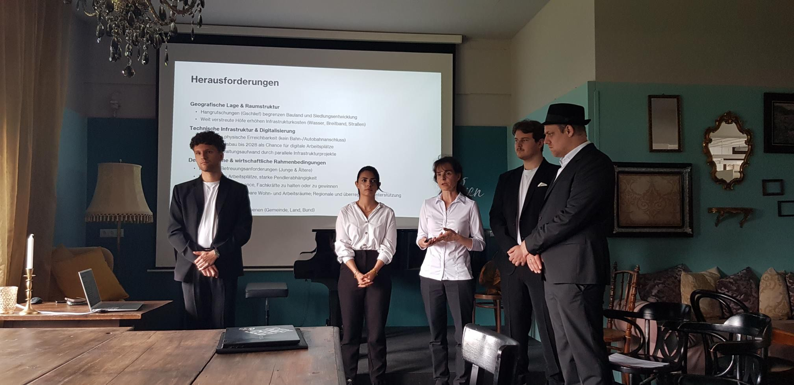
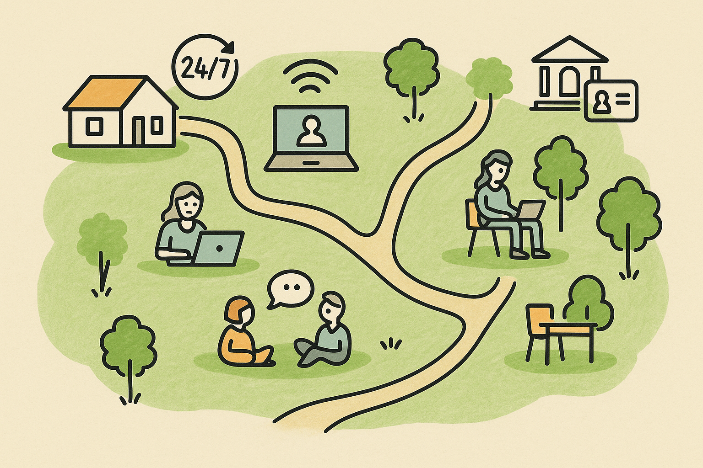

Wie Welfare Services die Zukunft des Arbeitens mitgestalten
🌍 Projektübersicht
Ländliche Gemeinden wie Doren stehen vor Herausforderungen wie Abwanderung, ungenutzten Gemeindeflächen und einer nur geringen Nutzung digitaler Verwaltungsangebote. Unser Projekt setzt genau hier an: Durch gezielte soziale Infrastruktur und digitale Services soll Remote Work strategisch gefördert werden. Ziel ist es, Doren zu einer lebenswerten, zukunftsorientierten Gemeinde weiterzuentwickeln.
Dabei analysieren wir, wie Welfare Services konkret zur Stärkung einer Remote-Work-Kultur beitragen können. Doren dient in diesem Zusammenhang als Modellregion für digitale Innovation im ländlichen Raum.
📸 Unser Projektteam

🗺️ Doren 2030 – Das digitale Dorf der Zukunft

👶 KidsHub 24/7 Flexible Kinderbetreuung für Berufstätige
🗣️ Community Siesta Gemeinsame Entspannungszeit im Grünen
📱 ID Austria & eAmt Digitale Amtswege im Alltag
💻 Coworking im Grünen Arbeiten in der Natur
🧑💻 Remote Residency Pass Zugang & Services für neue Digitale
🧩 Unsere Handlungsempfehlungen
Flexible Betreuung und neue soziale Dienstleistungen
24/7-Kinderbetreuung (Betreuungs-Slots)
Mobiler Pflege-Hub
Health-Tech-Lösung → Tele-Therapie-Kiosk
Gemeinschaft und nachhaltige Mobilität
„Remote-Buddy“-Programm
Mitfahr-App → „Green Commute“-Prinzip
Community-Kitchen-Projekt
Experimentelle Infrastruktur und Räume
Temporärer Pop-up-Coworking-Space
Micro-Rechenzentren (Edge-Server) installieren
Förderung von Gemeinschaft und Vernetzung
Remote Lunches
Stammtisch statt Kaffeeküche
Hybride Vereinsaktivitäten
Familienfreundliche Rahmenbedingungen
Stundenweise Eltern-Kind-Büro
Aufbau von Elternnetzwerken
„Betreuungs-Flatrate“ und/oder Gutscheine
Informations- und Aufklärungskampagnen zu Remote Work
Infoabende
Erfolgsgeschichten sichtbar machen
Kampagnen via Gemeindeblatt
Vorbildfunktion der Gemeinde
Homeoffice-Test für Gemeindebedienstete
Jobsharing über die Gemeindegrenzen
Remote-Work-Playground – „small place, big sandbox“
Neue Governance- und Finanzierungsmodelle
Zweckbindung eines Teils von Förderungen
RegLab (Aussetzen von strikten Widmungen)
Ausschreibung hybrider Teilzeit-Jobs
DAO → Bürger:innenentscheid
Wirtschaftliche Anreize für Zuzug und Unternehmensgründung